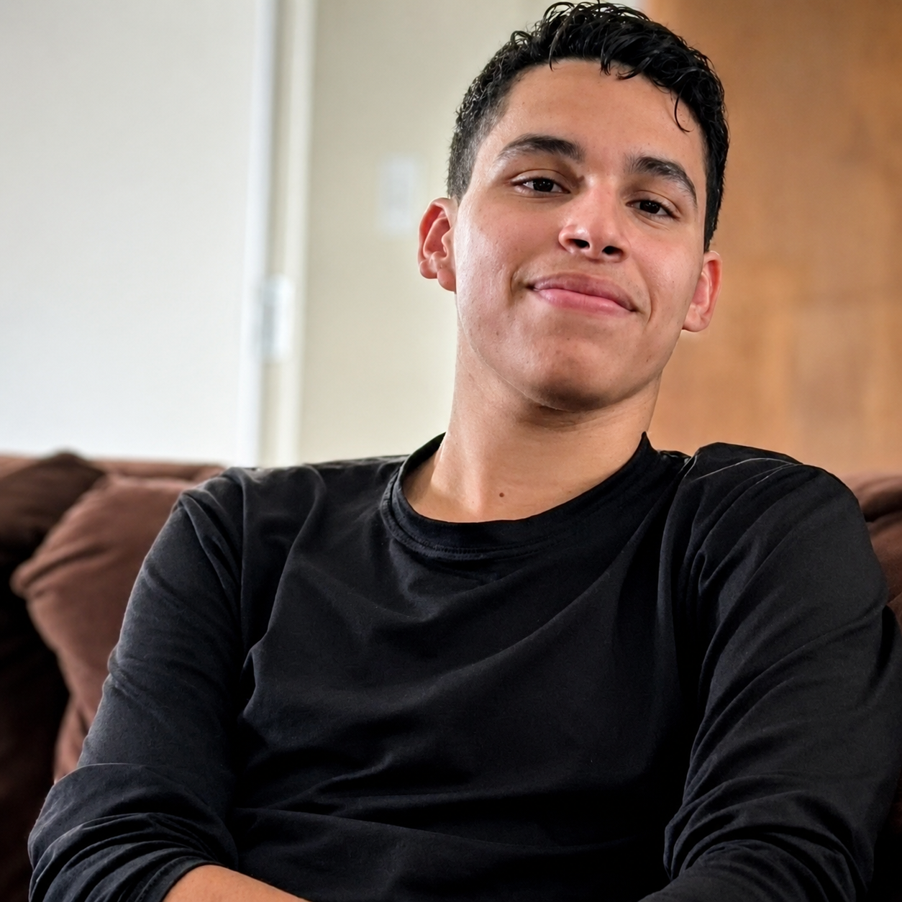

Estrutura clara
Páginas bem organizadas, acessíveis e fáceis de manter.

Visual limpo, carregamento rápido e uma estrutura pensada para transformar visitantes em contatos.
Meu foco é unir visual bem cuidado, código organizado e páginas que funcionam bem em qualquer tela.
Sou Kalyd, gosto de criar páginas com boa apresentação, responsividade e detalhes visuais que fazem o site parecer mais profissional. Meu foco é transformar ideias em experiências claras, bonitas e fáceis de usar.
Conhecer maisPáginas bem organizadas, acessíveis e fáceis de manter.
Layouts que se adaptam ao celular, tablet e desktop.
Menus, filtros, modais, temas e pequenas animações com fluidez.
Hierarquia visual, espaçamento e componentes com aparência profissional.
Entradas, transições e movimento sutil para deixar a navegação mais viva.
Git, GitHub, Vercel, domínio, formulários e ajustes finais.
Páginas focadas em apresentar uma oferta e levar o visitante para uma ação, como chamar no WhatsApp ou pedir orçamento.
Sites para empresas que precisam transmitir confiança, mostrar seus serviços e facilitar o contato com clientes.
Páginas para profissionais e marcas pessoais que querem uma presença online mais forte e organizada.
Cada seção precisa guiar o olhar e deixar claro o próximo passo.
O layout é pensado para não quebrar quando muda de tela ou resolução.
Animações e transições ajudam o site a parecer vivo sem atrapalhar a leitura.